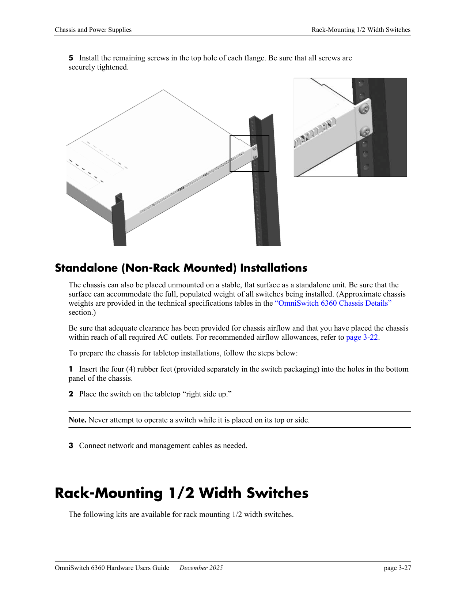
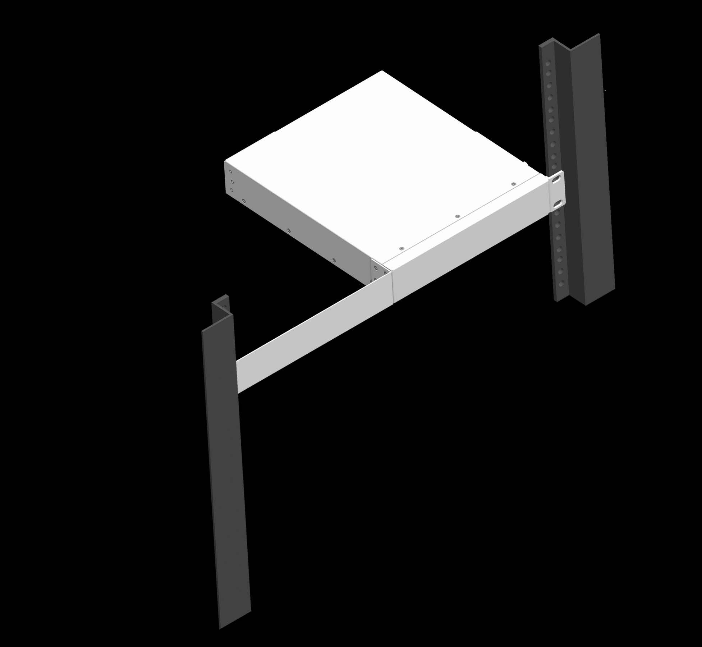
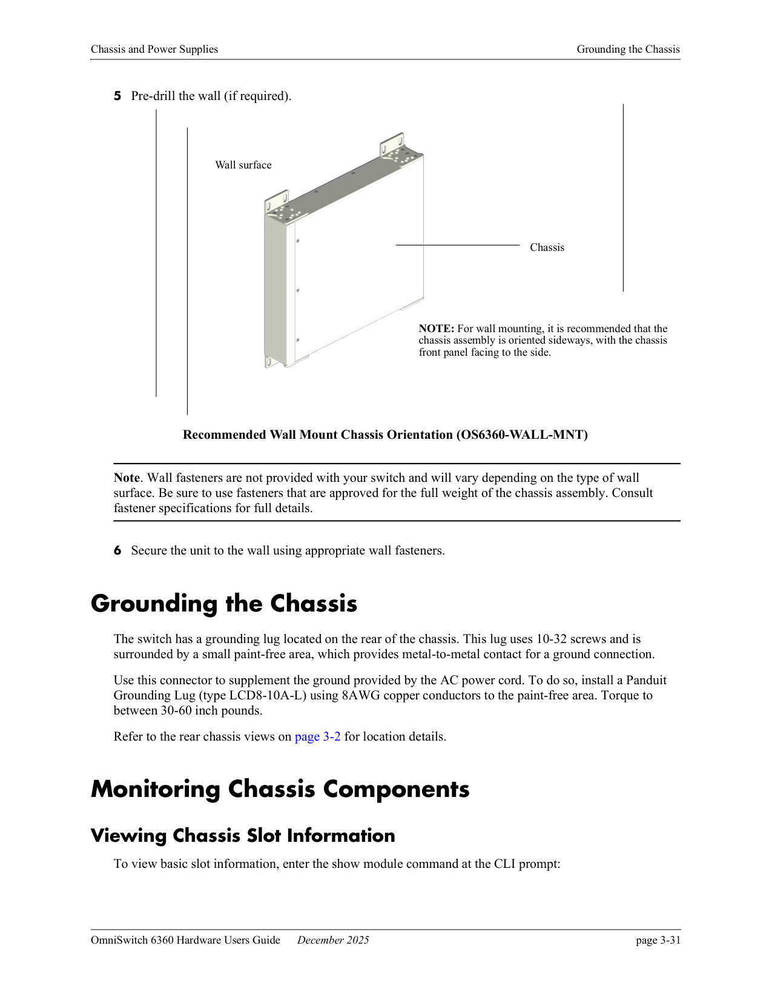

R（触发场景）
- 新机上架：
全宽机架安装、10 口半宽 L 支架、桌面摆放或 10/P10 壁挂 - 站点准备：
气流间隙、电涌防护、接地 lug、电源插座与电源线纪律 - PoE 部署：
首次激活 lanpower service、调端口/槽预算、设优先级、处理 Guard Band 拒载 - PD 不供电或被断电，需要排查 Priority Disconnect 裁决
- 机房温度偏高，核对 Tmra 与温度双阈值行为
I（核心理念）
- PoE 供电三环体系（F2，原文p62-68 ）。
- PoE 激活两级模型（P27）：
软件层默认 enabled，但物理层必须逐 slotlanpower slot service启动才真正供电。 - 环境包络（P7）：
0-45°C（Tmra）/湿度 5-95%/100-240V；chassis 温度=传感器读数（阈值判断用）、恒高于室温（P8）。 - 安装五大考量（P17）：
Tmra 折减/气流/载重/过流/接地。
| 环 | 机制 | 要点 |
|---|---|---|
| 外环：预算 | slot maxpower / port power 上限 + Guard Band 拒载 | maxpower 只设上限不预留（P32） |
| 中环：优先级 | low/high/critical + 物理端口号同级裁决（1 高 48 低） | — |
| 内环：保护动作 | Priority Disconnect 四情形 | 裁决细节见 P34/P35 |
A1（决策框架）
- 安装形态四选：全宽 24/48 口机架法兰 → 10 口半宽 L 支架（OS6360-RM-19-L）→ 桌面（橡胶脚垫）→ 壁挂（仅 10/P10，OS6360-WALL-MNT）（C6-C10，原文p48-55 ）
- 间隙三向预留：前 6"/后 6"/侧 2"，顶底免间隙（P10，原文p19 ）
- PoE 预算核算：按机型查预算表（120-760W），叠加待机功耗阶梯（13-60W，P9）；maxpower 只设上限不预留（P32）
- 预算不足时的裁决：Guard Band（余量<口上限即拒新 PD）→ 降口上限放行；Priority Disconnect 四情形按优先级+端口号裁决（P34/P35）
- 温度治理：Warning 超阈值发 trap 查气流；Danger 超阈值自动关机、处理后手动重启（P23）


A2（操作步骤）
- 机架安装：双人作业→先穿每侧法兰底部螺丝并紧固→再上顶部螺丝；重设备下置（C6，原文p48 -原文p51 ）；法兰卡扣：弹簧夹 out→tab 入槽→"CLICK"→螺丝固定（C7，原文p49 ）
-
壁挂：四托架朝下→双人定位标记→预钻孔→承重达标紧固件（自备）；建议侧立面板朝侧（C10，原文p54 ）

-
接地：Panduit LCD8-10A-L 接地耳+8AWG 铜线+扭矩 30-60 in-lb（C12，原文p55 ）
- PoE 首次激活：
show powersupply确认 UP→lanpower slot 2/1 service start→show lanpower slot 1/1核对（C14，原文p60-62 ） - 预算/优先级调整：
lanpower port 1/1/24 power 3000、lanpower slot 3/1 maxpower 400、lanpower port 1/1/6 priority critical（C16-C18，原文p63-64 ） - Guard Band 解锁：拒载时
lanpower power 1/1/1 power 10000降口上限放行 4W 小 PD（C22，原文p65 ） - bt/4pair：
lanpower 4pair开 60/75/95W；lanpower 8023bt开 Class 5-8（C20，原文p62 ）
E（实证案例）
- 站点准备与开箱清点流程（C2/C3，原文p17-19 ）
- 盲板安装：
空槽箭头朝上常装，调节气流（C11，原文p48 ） - Fast PoE：
PoE 默认态固化于 FPGA，上电数秒即供电不等 AOS 启动（P30，原文p63 ） - 电涌防护五条军规（P11，原文p18 ）
B（反例/坑）
- 本机型注意：
lanpower port admin-state不能用于首次激活 PoE——必须先lanpower slot service（X5，原文p62 ） - Class 检测开启会复位全机 PoE 口（X6，原文p62 ）；电容检测不符 IEEE 仅限 legacy 话机（X4，原文p65 ）
- maxpower 下调低于当前总耗时，低优先级口立即失电（C17，原文p64 ）
- 危险温度阈值出厂固化不可配（X3，原文p57 ）
- 桌面运行禁顶面/侧面朝上（X16，原文p51 ）；禁延长线（X11，原文p17 ）；违反电涌五条军规可能失保（X18，原文p18 ）
- 盲板必须常装，否则气流改道可致整机过热故障（X14/X15，原文p19 /原文p77 ）
来源
- OmniSwitch 6360 Hardware Users Guide Ch2 快速入门（原文p17-24 ）、Ch3 机箱与电源（原文p25-57 ）、Ch4 PoE 管理（原文p58-69 ）。
- 条目来源：
cases C2-C22；principles P7-P12/P17-P23/P25-P35；counter-examples X3-X8/X11-X18；frameworks F2。